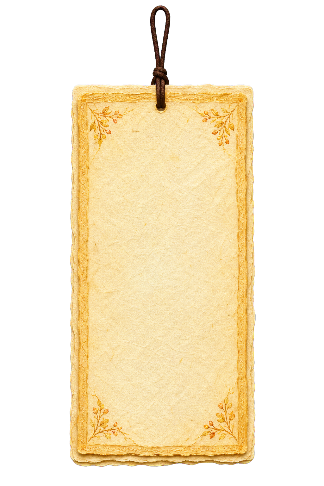
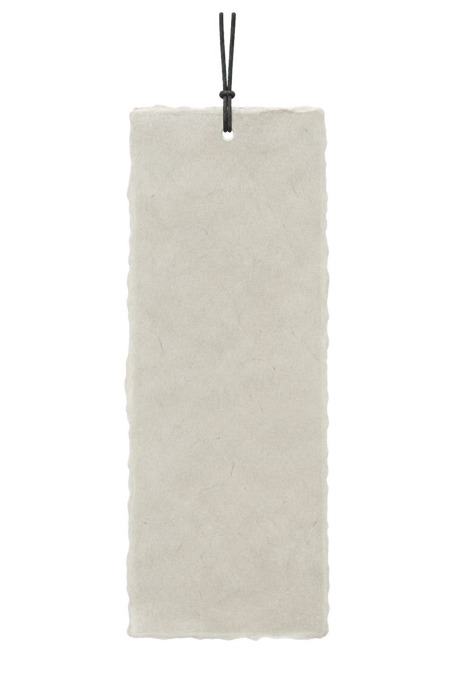
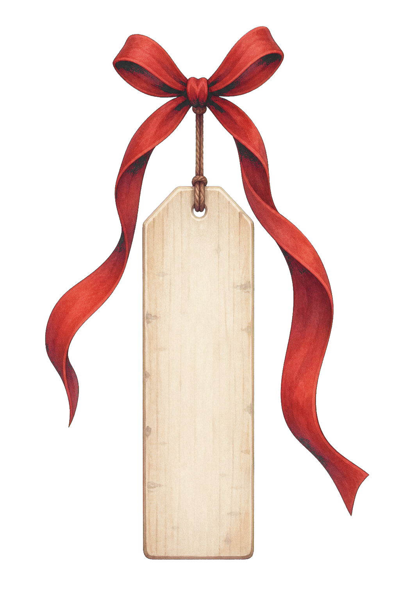
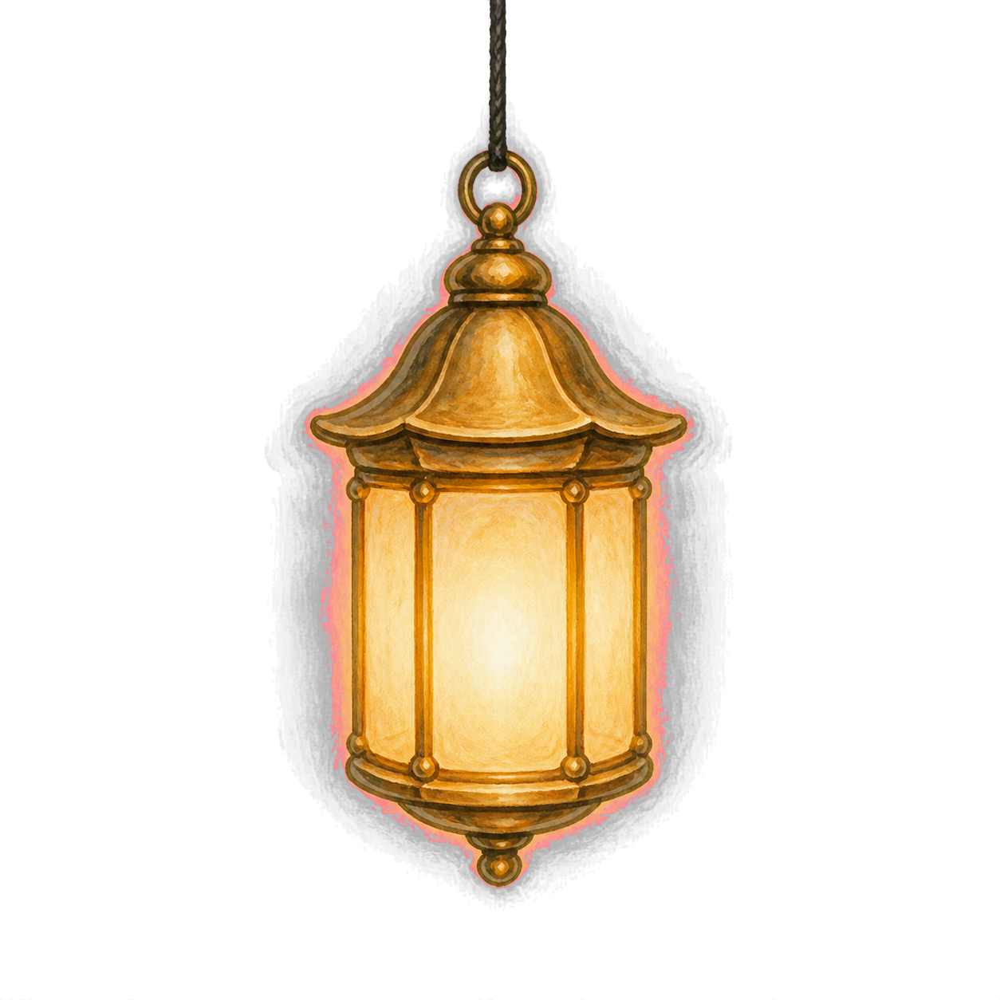
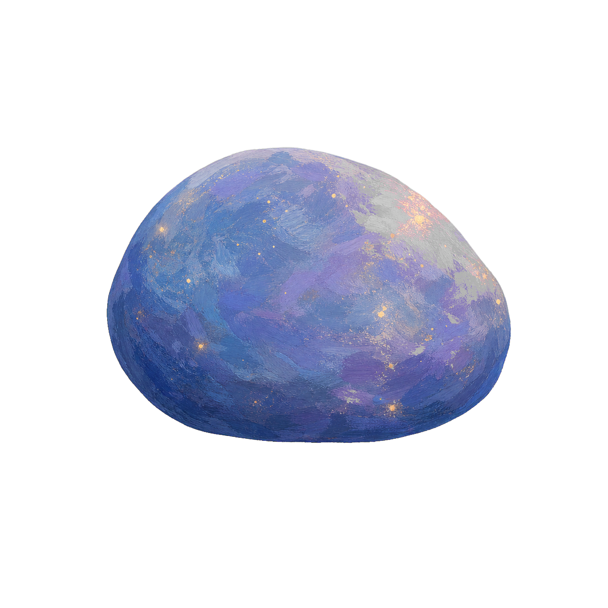

2a
IROORI · §5.2 소원나무 먼저
/wishtree — 방향 확인용 1개 화면
새 스펙(§2 다크 UI 가독성, §4.1 텍스트 3단 구조)을 반영했습니다. 상세는 한지색(ivory) 시트로, 미리보기는 16자로 통일했습니다. 방향이 맞으면 나머지 5개 화면을 이어서 진행하겠습니다.
우듬지
위로 스크롤
이 나무에서 1,203개의 소원이 이루어졌어요
이루어진 소원은 우듬지에 모여 있어요
가지
기본 위치
이 나무에서 1,203개의 소원이 이루어졌어요
소원 걸기
밑동
아래로 스크롤
바랜 소원은 사라지지 않아요
백일이 지난 소원지는 밑동에 낙엽처럼 쌓입니다. 돌은 그 자리에 그대로 남아요.
소원 상세
ivory 읽기 시트

익명
2026년 7월 3일
할머니가 올해도 마당에 나와 앉으시기를. 봄볕 좋은 날 대문 앞 평상에서 지나가는 사람들과 이야기 나누던 그 모습을 다시 볼 수 있기를. 무릎이 아프지 않아서 마당의 화분에 매일 물을 줄 수 있기를 바랍니다.
고운 소원지 · 100일
신고
비로그인
하단 바
당신의 소원도 걸어보세요
로그인 없이 둘러볼 수 있어요
시작하기
비공개 소원
뒷면만
이 소원은 열리지 않아요
소원나무
1280 · 상세는 우측 패널
이루리
이 나무에서 1,203개의 소원이 이루어졌어요
소원 걸기
방금 걸린 소원
할머니가 올해도 마당에…
익명 · 조금 전
동생이 올해는 웃는 날이…
익명 · 12분 전
비공개 소원
소원지를 누르면 여기에 펼쳐집니다.
소원나무
768 · 상세는 우측 패널
이 나무에서 1,203개의 소원이 이루어졌어요
소원 걸기
방금 걸린 소원
할머니가 올해도 마당에…
익명 · 조금 전
동생이 올해는 웃는…
익명 · 12분 전
2b
나머지 5개 화면
랜딩
히어로
이루리
여기, 소원을
걸고 가세요.
이루리 — 소원을 나무로 키우는 곳
소원 걸기
소원나무 구경하기
로그인 없이 둘러볼 수 있어요
랜딩
스크롤 섹션
12,847
지금까지 걸린 소원
1,203
이루어진 소원
동생이 올해는 웃는 날이 더 많기를
시험 끝나면 엄마랑 바다에 갈 수 있기를
고양이 밤이가 아프지 않기를
당신의 소원은
무엇인가요
소원 걸기
소원 적기
STEP 1 · 헌물 고르기
×
무엇을 걸까요
이번 달 무료 소원지 1장이 있어요
매다는 헌물 · 전부 1년

소원지
무료
60자까지
남길 수 있어요
고운 소원지
1,900원
120자까지
남길 수 있어요

오색끈
2,900원
색 5종
200자까지

등불
4,900원
밤에 빛납니다
300자까지
새기는 헌물 · 기간 제한 없음

돌
9,900원
이름을 새기고 500자까지 남길 수 있어요
소원지 고르기
STEP 2
소원지 — 한지 입력지
‹
소원지에 담깁니다
아버지 다리가 나아서 다시 산에 오르시기를
21 / 60
나무에 보이게 두기
이름 없이 걸기
다 적었어요
STEP 2
오색끈 — 색 스와치
‹
오색끈에 담깁니다
동생이 건강하게 자라기를
11 / 200
끈 색을 골라주세요
나무에 보이게 두기
이름 없이 걸기
다 적었어요
STEP 2
등불 — 한지 입력지
‹
등불에 담깁니다
할머니 오래오래 건강하시기를. 저녁마다 마당을 산책하실 수 있을 만큼요.
32 / 300
나무에 보이게 두기
이름 없이 걸기
다 적었어요
STEP 2
돌 — 각인 이름 별도 입력
‹
돌에 새깁니다
새길 이름 · 12자
민서
아이가 태어나면 이름을 여기 새기고 싶어요. 오래오래 이 나무 곁에 남기를 바랍니다.
38 / 500
나무에 보이게 두기
이름 없이 걸기
다 적었어요
STEP 3
걸기 · 변신 연출
걸었어요.
나무에 걸기
한지가 접혔다 헌물로 변하며(소원지 그대로 / 고운소원지 금박이 번짐 / 오색끈 끈이 감기며 목찰이 달림 / 등불 안으로 들어가 불이 켜짐 / 돌로 굳어 각인이 파임) 위로 날아올라 가지에 매달립니다. 전체 2.5초, 정지 상태에는 글자가 없습니다.
내 소원
/mywishes
내 소원
이루어진 소원
아버지 다리가 나아서…
고운 소원지 · 3월 2일에 걸었어요
걸려 있는 소원
올해는 이사한 집에서…
소원지 · 6월 18일
이루어졌어요
동생이 건강하게…
오색끈 · 7월 3일
이루어졌어요
할머니 오래오래…
등불 · 꺼짐 · 3월 9일
다시 밝히기
바랜 소원
지난 겨울이 덜 춥기를
소원지 · 작년 11월 9일
로그인
/login
‹
소원을 걸려면
로그인이 필요해요
둘러보는 것은 그냥 하셔도 됩니다
카카오로 계속하기
구글로 계속하기
설정
/settings
설정
나그네 4b7c
카카오로 로그인
알림
테마
밤
로그아웃
회원탈퇴